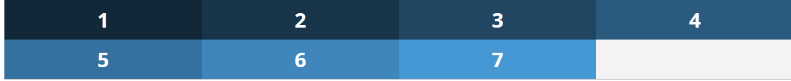
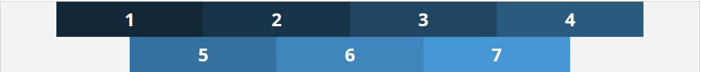
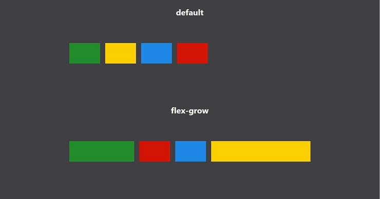
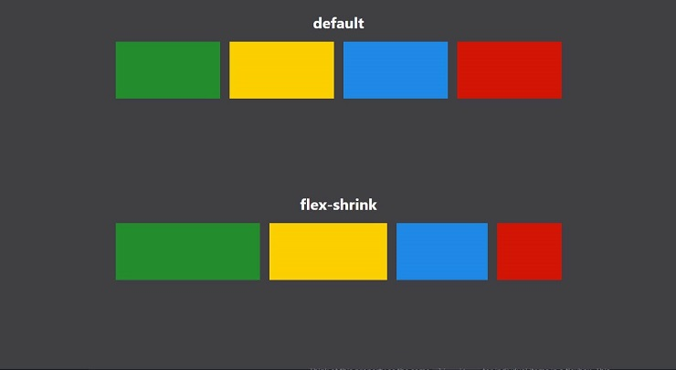

Flexbox

Figura 1. Definición de flexbox. Recuperado de
https://www.w3.org/TR/css-flexbox-../fase2/images/flex-direction-terms.svg
Uso de flexbox:
Para comenzar a utilizar Flexbox se añade al contenedor la propiedad "display:flex”
flex-direction
Puede tomar 4 valores y se aplica al padre (contenedor):
- flex-direction:row; Los elementos se visualizan de izquierda a derecha (valor por defecto, similar al ejemplo 1)
- flex-direction:row-reverse; Los elementos se visualizan de derecha a izquierda.
- flex-direction:column; Los elementos se visualizan de arriba hacia abajo.
- flex-direction:column-reverse; Los elementos se visualizan de abajo hacia arriba.
Figura 2. Dirección en flexbox. Autoría propia
flex-wrap
Cuyo valor afecta a cómo se distribuyen los elementos en fila y, por consiguiente, a su tamaño. Los posibles valores son:
- flex-wrap:nowrap; Los elementos se muestran en línea, en una sola fila, y su tamaño se ajusta al contenedor siempre y cuando la suma de todos ellos sea mayor o igual que el 100% de la anchura del contenedor. Si es inferior, se siguen mostrando en línea pero conservan su tamaño. Este es el valor por defecto, y como veíamos en el ejemplo 1, aunque la anchura de los elementos es el 25% del contenedor, todos se muestran en línea modificando su tamaño para que la suma total no sea superior al 100% de su contenedor.
- flex-wrap:wrap; Los elementos se muestran en línea, pero si su anchura supera la del contenedor, se distribuyen en varias filas.
- flex-wrap:wrap-reverse; Los elementos se muestran en línea, pero si su anchura supera la del contenedor, se distribuyen en varias filas, y además lo hacen en orden inverso al de maquetación.

Figura 3. Distribución en flexbox. Autoría propia
flex-flow
Se pueden especificar las anteriores propiedades en una sola mediante "flex-flow” de la siguiente forma:
flex-flow: flex-direction flex-wrap
Por ejemplo:
.contenedor{
display:flex;
flex-flow:row-reverse wrap-reverse;
}
justify-content
En cuanto a la alineación horizontal de los elementos en Flexbox, existe la propiedad "justify-content", que alinea los elementos a lo largo del eje principal (main axis) de su contenedor, pero a diferencia de la alineación de un texto.
- justify-content:flex-start; Alinea los elementos en horizontal desde el inicio de la dirección del eje principal de su contenedor (partiendo desde el inicio de la línea). Este es el valor por defecto. Es importante destacar que, como veremos más adelante, la dirección establecida en "flex-direction” afecta a la alineación.
- justify-content:flex-end; Alinea los elementos en horizontal desde el final de la dirección del eje principal de su contenedor (partiendo desde el final de la línea)
- justify-content:center; Alinea los elementos al centro del eje principal de su contenedor. Similar a un texto alineado al centro.
- justify-content:space-between; Alinea los elementos justificándolos a lo largo del eje principal de su contenedor. Similar a un texto justificado. Los elementos laterales se pegan a los extremos y el resto se distribuyen a lo largo del eje principal dejando el mismo espacio entre ellos.
- justify-content:space-around; Alinea los elementos distribuyendo sus centros de forma horizontal a lo largo del eje principal de su contenedor, dejando el mismo espacio lateral de separación al comienzo, al final y entre ellos.
.contenedor{
display:flex;
flex-direction:row;
flex-wrap:wrap;
justify-content:center;
}

Figura 4. Justificación del contenido en flexbox. Autoría propia
align-items | align-self | align-content
La alineación vertical se realiza a través del llamado "eje transversal” (cross axis), y para ello se utilizan tres propiedades diferentes, "align-items”, "align-self” y "align-content”.
- align-items: establece la alineación predeterminada para todos los elementos del contenedor, incluidos los elementos independientes.
- align-self: permite alinear elementos independientes del contenedor.
- align-content: alinea las líneas/filas de elementos de un contenedor.

Figura 5. Alineación del contenido en flexbox. Recuperado de
https://www.yunbitsoftware.com/blog/wp-content/uploads/2017/03/imagen_flexbox_align.png
A continuación se encuentran los valores que pueden tomar cada una de ellas (los valores de "align-items” son válidos para "align-self”):
- align-items:stretch: Valor por defecto. La altura de los elementos se ajusta al tamaño del contenedor (o fila), dividiendo el espacio sobrante entre todos los elementos por igual.
- align-items:flex-start: Alinea en vertical los elementos desde el inicio de la dirección del eje transversal de su contenedor (al igual que ocurría en horizontal). También afecta el valor de "flex-direction” al sentido de la alineación vertical.
- align-items:flex-end: Alinea en vertical los elementos desde el final de la dirección del eje transversal de su contenedor (al igual que ocurría en horizontal).
- align-items:center: Alinea al centro vertical los elementos a lo largo del eje transversal de su contenedor.
- align-items:baseline: Alinea en vertical las "líneas base” de los elementos a lo largo del eje transversal de su contenedor. Para poder comprender este ejemplo, vamos a añadir algunos estilos diferentes a los elementos:
Los valores disponibles para la propiedad "align-content” son los siguientes:
- align-content:stretch: Valor por defecto. La altura de las filas se ajustan al tamaño del contenedor, dividiendo el espacio sobrante entre todas las líneas por igual.
- align-content:flex-start: Alinea en vertical las filas desde el inicio de la dirección del eje transversal de su contenedor.
- align-content:flex-end: Alinea en vertical las filas desde el final de la dirección del eje transversal de su contenedor.
- align-content:center: Alinea al centro vertical las filas a lo largo del eje transversal de su contenedor.
- align-content:space-between: Alinea las filas justificándolas a lo largo del eje transversal de su contenedor. Similar a un texto justificado en vertical. Las filas superior e inferior se pegan a sus extremos y el resto se distribuyen a lo largo del eje transversal dejando el mismo espacio entre ellas.
- align-content:space-around: Alinea las líneas distribuyendo sus centros de forma vertical a lo largo del eje transversal de su contenedor, dejando el mismo espacio vertical de separación en la parte superior, inferior y entre ellos.
order
Posiciona un elemento en el orden asignado por el número entero especificado en la propiedad, teniendo en cuenta el valor asignado al resto de elementos, cuyo valor por defecto es 0 (cero). Esto significa que, a no ser que se especifique un orden a todos los elementos, cualquier número aplicado a un solo elemento lo llevará a la última posición. Esto es debido a que por defecto todos tienen cero”.
flex
se aplica a los elementos del contenedor y que a su vez se estructura de tres propiedades diferentes y que se
pueden presentar por separado, "flex- grow”, "flex-shrink” y "flex-basis”, y se define de la siguiente forma:
flex: none | <flex-grow> <flex-shrink> <flex-basis>
Donde:
-
flex-grow:<número>: Determina el factor de incremento de tamaño de uno o varios elementos en
relación al resto teniendo en cuenta el espacio "vacío” o "libre” entre ellos. Como espacio "vacío/libre”
nos referimos al espacio que no ocupan los elementos en relación a su fila. Cuando este valor se omite, se
establece en 1.

Figura 6. Ejemplo del uso de flex-grow. Recuperado de https://www.code-boost.com/img/flex-example8.jpg -
flex-shrink:<número>: Determina el factor de disminución de tamaño de uno o varios elementos en
relación al resto teniendo en cuenta el espacio "vacío” o "libre” entre ellos. Cuando este valor se omite,
se establece en 1.

Figura 7. Ejemplo del uso de flex-shrink. Recuperado de https://www.code-boost.com/img/flex-example9.jpg -
flex-basis: auto | 0 | <width>: Especifíca la base flexible, la cual es el tamaño inicial de un
elemento flexible. Ésta propiedad determina el tamaño de una caja de contenidos a no ser que se haya
especificado de otra forma usando box-sizing.

Figura 8. Ejemplo del uso de flex-basis. Recuperado de https://www.code-boost.com/img/flex-example10.jpg
A continuación se presenta un video para complementar el tema: